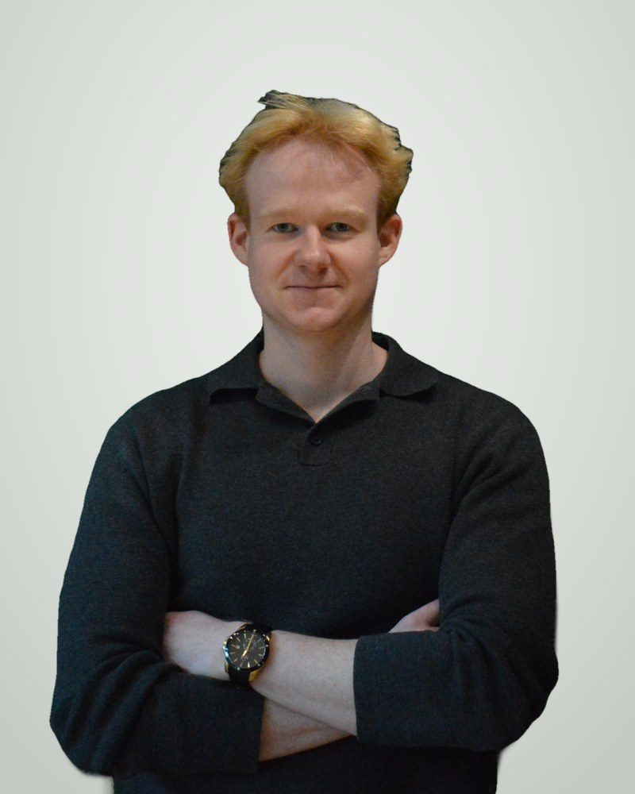
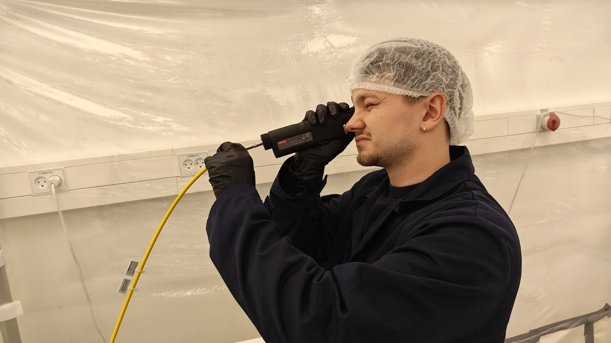
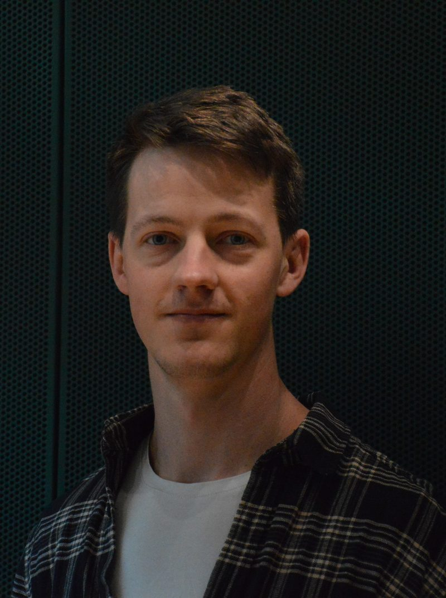
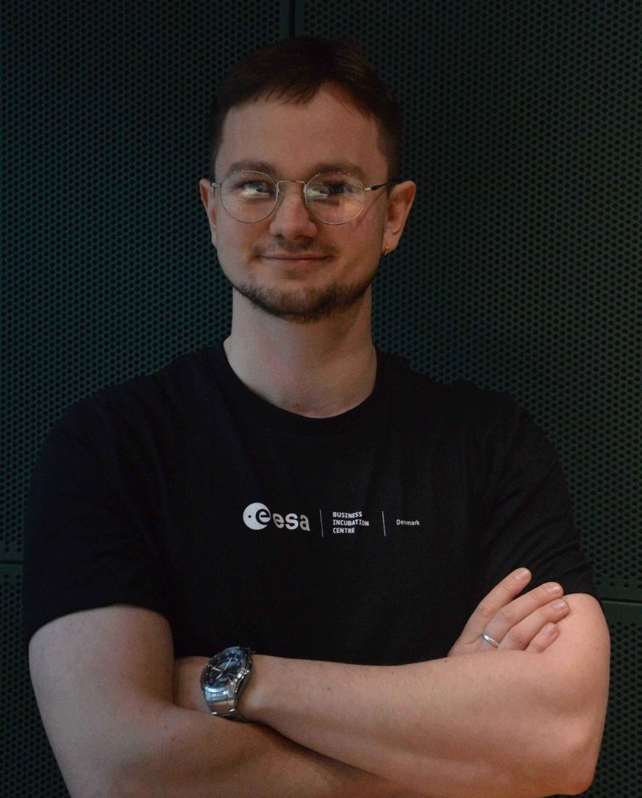
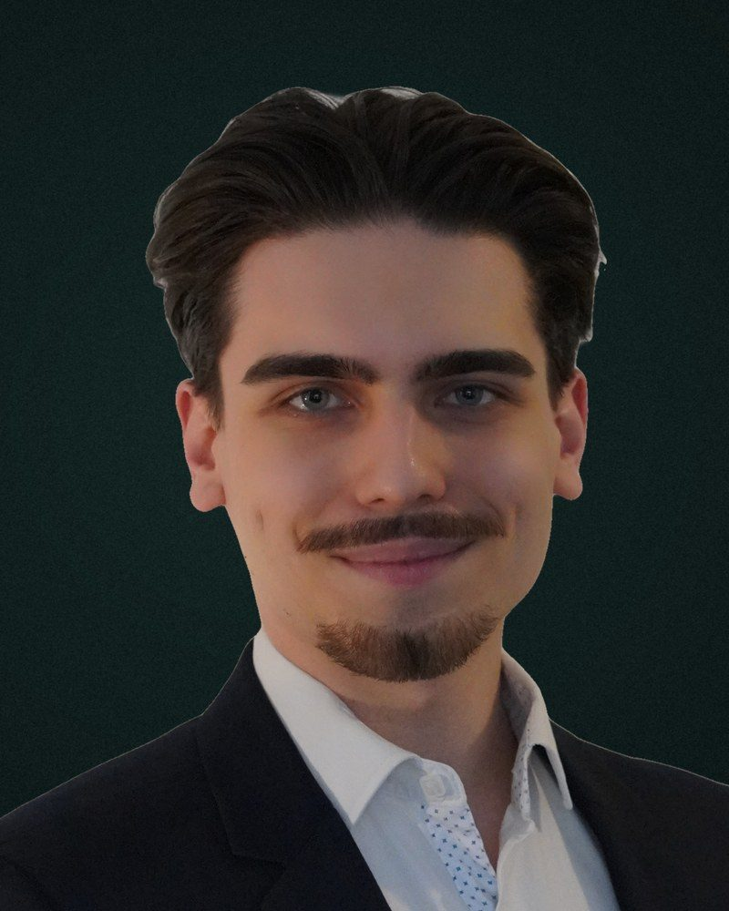

Benjamin Tvorup Christensen
Medstifter og CEO
Ansvarlig for kommerciel strategi, pilotprojekter og partnerskaber.
LinkedIn
En ingeniørvirksomhed i Aarhus, der udvikler laserlugning til europæiske landmænd.
Ukrudt i afgrøderækken fjernes stadig med håndkraft eller sprøjtemidler. Arbejdskraft er knap og dyr, reglerne for sprøjtemidler bliver strammere, og avlerne har brug for en måde at holde markerne rene på uden kemi.
GreenGuard blev grundlagt i 2024 for at gøre kemifri lugning praktisk og overkommelig for små og mellemstore bedrifter, ikke kun for de største. Vi designer selv optik, elektronik, software og maskine og tester det i danske marker hver sæson.
Ingeniører med baggrund i mekanik, optik, robotteknologi og computer vision.

Medstifter og CEO
Ansvarlig for kommerciel strategi, pilotprojekter og partnerskaber.
LinkedIn
Medstifter og CTO
Leder udviklingen af optik, laserstyring og integration med traktoren.
LinkedIn
Udviklingschef
Leder computer vision, maskinstyring og markklar hardware.
LinkedIn
Softwareudvikler
Bygger den billedgenkendelse og softwareinfrastruktur, der driver Ecoray.
LinkedInVil du se en demo, have et pilotforsøg på din bedrift eller tale om teknologien? Kontakt os direkte.
Bautavej 1A
8210 Aarhus V